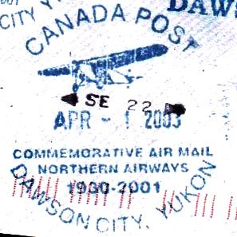

Dawson City PO pictorial cancel
Commemorativeair Mail Northern Airways 1930-2001 · Aircraft
- Status
- Expired
- Run dates
- 2001-01-01 to ?
- Design
- "COMMEMORATIVEAIR MAIL NORTHERN AIRWAYS 1930-2001"; aircraft
- Ink colour
- Blue
- Designer
- Unknown
- Post office
- Dawson City PO
1054 Third Ave
Dawson City, YT
Y0B 1G0 - Subjects
- aircraft, transportation, mail run, postal history
This cancel is retired, so the post office can no longer apply it. Covers with it turn up from dealers and other collectors.
 Dawson City POHouse
Dawson City POHouse Dawson City POTwo dancers
Dawson City POTwo dancers Dawson City POMail race
Dawson City POMail race Dawson City POFreemasonry
Dawson City POFreemasonry Dawson City POOne dancer
Dawson City POOne dancer